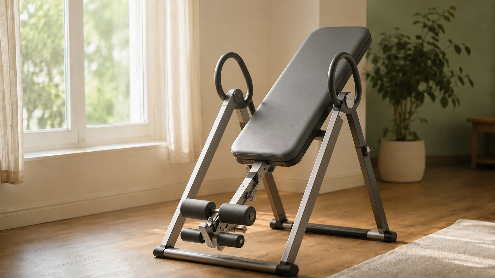

生长基础
空气污染、PM2.5 与孩子的生长
脏空气会让生长的生物学环境变得不那么有利——在出生前和幼儿期最清楚——通过炎症、胎盘压力、疾病、失去的睡眠和更少的户外玩耍。为什么它改变的是生长轨迹（有时矮小，有时体重增加）而不是让孩子变小，以及家庭如何减少暴露。
阅读文章 →医学检查
哮喘吸入剂/激素会让孩子长不高吗？
吸入激素可能轻微减慢生长——第一年约半厘米，最好的长期试验中约1.2厘米的成年身高——与剂量相关，且并非每年都损失。但控制不良的哮喘并不能保护生长。药物、剂量、疗程和年龄如何改变这个平衡。
阅读文章 →生长基础
出生时个头小：SGA、早产，以及谁会追赶上来
“大多数小个子宝宝会追赶上来”成立却不完整。那些听起来相似却含义不同的词（SGA、低出生体重、FGR、早产），追赶生长通常何时发生，为什么矫正年龄重要，以及持续矮小何时该被评估——而不是一味等待。
阅读文章 →活动
运动能让孩子长高吗？
运动造就更强的骨骼，而非更长的。选择陷阱、哪些活动对骨骼加载最多、那些误区（篮球、跳跃、游泳、悬吊），以及真正的风险——能量摄入不足。
阅读文章 →误区
食物会导致性早熟吗？
鸡肉、牛奶、大豆——父母最常指责的三种食物。一个诚实、有据可查的答案：为什么“鸡肉激素”是谣言，牛奶和大豆到底起什么作用，以及真正让青春期提前的那一个因素。
阅读文章 →
误区
倒立机能让你长高吗？
确实能——大约 5 毫米，维持约一小时。为什么这个效果真实却只是“借来的”、所谓拉伸机到底是什么、为什么牵引够不到生长板，以及广告从不提的眼压风险。
阅读文章 →误区
咖啡因或咖啡会让孩子长不高吗？
没有令人信服的证据表明咖啡会直接关闭孩子的生长板或偷走身高。但咖啡因会偷走睡眠——而且它藏在巧克力、茶、可乐、甜点、能量棒和补充剂里。证据到底显示了什么，以及如何读懂藏起它的标签。
阅读文章 →误区
喝牛奶真能长高吗？
牛奶支持生长，而非创造生长。真实约 ~0.4 cm 的效果、为什么骨更结实不等于骨更长、IGF-1 信号、植物奶替代品，以及牛奶什么时候真正有用。
阅读文章 →
青春期
性早熟与成年身高
十岁最高的孩子，不一定二十岁最高。为什么早熟把生长速度推快却缩短其时长，雌激素与骨龄如何决定终点，以及治疗能否保住身高。
阅读文章 →医学检查
读懂孩子的生长验血报告
IGF-1、TSH、维生素D、铁蛋白——每项结果究竟意味着什么、为什么单一数值很少能解释生长缓慢、为什么参考范围会不同，以及这四项如何作为一个系统彼此关联。为父母消化整理，全文附出处。
阅读文章 →活动
孩子究竟需要多少运动？
“每天60分钟”是一个每周平均值，而非每晚的秒表测验。年龄、强度、骨骼负荷、休息和坚持，如何改变一个有效的一周该有的样子——以及为什么几分钟的跳跃可能比一小时的步行更重要。
阅读文章 →预测
我的孩子能长多高？
成年身高究竟如何预测——基因、中亲身高、骨龄和青春期时机——以及为什么每个估算都是一个区间，而不是天花板。诚实呈现的差异化功能。
阅读文章 →
生长基础
各年龄段的正常身高与体重：读懂曲线
没有一个每个孩子都必须达到的数字。百分位和 Z 值真正的含义、为什么第 50 不是目标、为什么选用的曲线会改变答案，以及为什么生长趋势才是真正的故事。
阅读文章 →生长规律
为什么孩子在春天长得更快——以及为什么3个月会误导
温带地区许多孩子在春天长高更快——但这不是普适的日历规则，而三个月的读数会严重扭曲生长速度。到底是什么驱动季节性生长、为什么热带不同，以及为什么生长是一条轨迹而非一张快照。
阅读文章 →医学检查
压力、皮质醇与孩子的生长
普通的担忧不会阻止健康孩子生长。但严重、持续的逆境会扰乱睡眠、食欲和 GH–IGF-1 通路——在罕见情况下导致心理社会性矮小，其激素变化可在更安全的环境中逆转。一条变慢的曲线何时需要复查。
阅读文章 →医学检查
甲状腺与孩子的生长
甲状腺功能低下会减慢身高，而体重保持或上升——最可治疗的生长迟缓原因之一。提示性的模式、为什么生长板停滞、治疗后的追赶生长是什么样，以及为什么并不总能完全追回。
阅读文章 →营养
维生素D、阳光与孩子的骨骼
阳光造出孩子大部分维生素D——可阳光充足城市的孩子仍常不足（室内生活、玻璃、肤色、纬度、PM2.5）。它对骨骼做什么、为什么饮食记录偏低、为什么无法把阳光换算成剂量，以及为什么保护生长却不增加身高。
阅读文章 →人口趋势
为什么韩国和荷兰的孩子长高了那么多？
整个人群显著长高——然后停了。到底是什么推动了它（不是牛奶，也不是基因变了）、为什么趋于平台、青春期提前与成年更高有何不同，以及为什么K-pop和中国剧集会夸大一个真实趋势。全文附出处。
阅读文章 →睡眠
睡眠影响身高吗？
深睡、生长激素与真正的信号：为什么'午夜前'规则是误区、为什么熬夜一晚不会损失身高，以及睡眠与生长真正交汇的那一处——睡眠呼吸暂停。
阅读文章 →生长基础
世界各地的生长曲线，按国家梳理
没有单一的“世界”或“亚洲”曲线。一次按国家的巡览——WHO、CDC、中国、日本、韩国、印度、东南亚、沙特、欧洲——以及为什么你选用的曲线会移动孩子的百分位。
阅读文章 →营养
哪些生长营养辅因子真正重要？
钙、维生素 D、锌和铁都重要——但纠正真正的缺乏，与用钱买身高不是一回事。证据怎么说、各年龄的安全摄入量，以及如何区分真实的缺口与巧妙的营销。
阅读文章 →预测
孩子什么时候停止长高？
生长在生长板闭合时结束——由雌激素在男女身上共同驱动——而不是在某个生日。为什么骨龄比年龄更能读出剩余'跑道'、为什么它不是全部，以及究竟是什么关上了这扇窗。
阅读文章 →
生长基础
如何在家准确测量孩子的身高
1 厘米的误差会抹掉三个月的真实生长——而你的孩子今晚确实比今早矮。一套可重复的流程、三次读数规则，以及为什么一位细心的家长能测得比匆忙的门诊更准。
阅读文章 →
营养
蛋白质与身高：蛋白质真能帮孩子长高吗？
给家长的蛋白质 101：蛋白质到底做什么、IGF-1 通路、质量对数量、牛奶问题，以及为什么蛋白质是达到基因潜力的燃料，而不是把它撬得更高的杠杆。
阅读文章 →预测
为什么两家医院给出的骨龄不一样
一家说 8 岁，另一家说 9 岁——通常两家都没错。为什么 Greulich–Pyle 和 TW3 是两把不同的尺子，多大的差异属于正常，为什么图谱可能不适合你的孩子，以及两份报告不一致时该怎么办。
阅读文章 →
安心
我的孩子是不是太矮了？
大多数矮个子孩子都很健康。如何看增长速度、百分位和骨龄，真正的危险信号，以及关于生长激素治疗的诚实真相。
阅读文章 →
身高与增长速度
为什么有些孩子长得比别人快？
身高增长速度的科学，以及塑造孩子成长的六大系统：基因、激素、睡眠、营养、运动、骨龄。
阅读文章 →没有匹配的文章。
更多成长科学文章即将上线